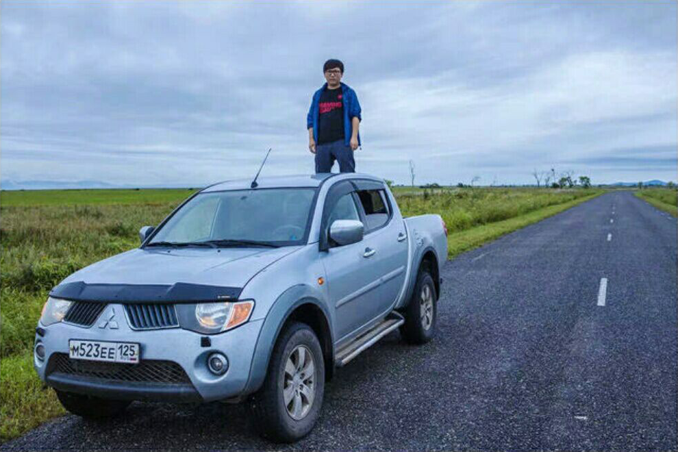
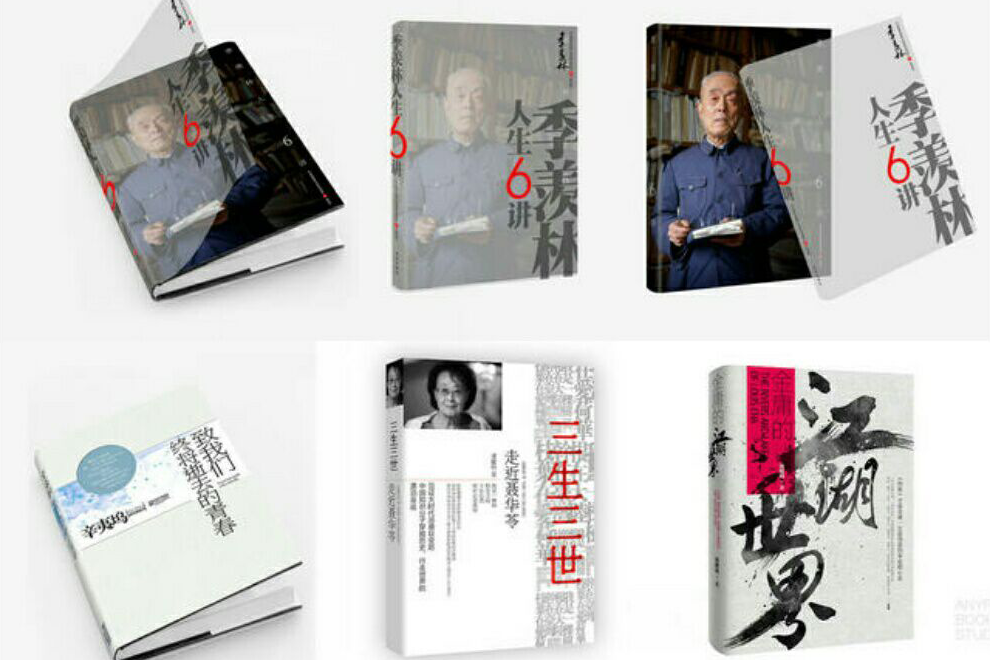
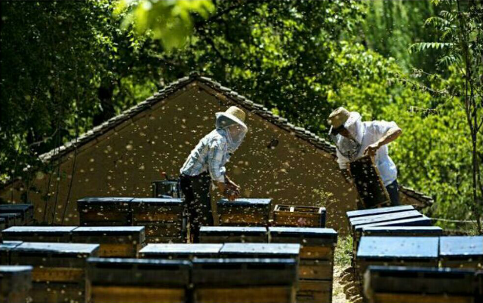

我叫安宁，一个跋涉至俄罗斯远东寻米，一点儿都不安宁的80后。
父母给我取这个名字，大概是希望我能听话一些，但后来他们逐渐意识到了，我名字好像取错了。
因为从幼儿园起，我几乎就把家里所有能涂颜色的黑白书，全部涂成了彩色，然后在高中的时候瞒着家里人，在父亲对我充满理科技术男的期冀中，偷偷转到了文科班。
现在，我的另一个身份，是一个在设计圈待了十年的“老司机”。2006年的时候，我作为联合创始人的“大象设计”成为了国内最大的出版物设计机构，有40多位设计师，许多80后耳熟能详的超级畅销书都是我参与设计的。
可以说在小说、教辅、党史、经济管理等类别的出版市场中，我们的设计占据了半壁江山。
那年夏天，我开车穿越内蒙境内，从巴丹吉林沙漠边缘一直开到甘肃境内，最后到了我的老家，甘肃张掖。
那么，就从食物开始吧
2014年夏天，我创建了“安的田园”这个品牌，安的田园，我的田园，同时也寓意着食物所能带给人的一种安心。
从耕种者到作物，从烹饪者到食用者，我们去影连接几座农场，链接春种秋收，链接人与大自然。
2014年夏天，我创建了“安的田园”这个品牌，安的田园，我的田园，同时也寓意着食物所能带给人的一种安心。
从耕种者到作物，从烹饪者到食用者，我们去影连接几座农场，链接春种秋收，链接人与大自然。